Principal Investigator

René Vidal
Rachleff University Professor, University of Pennsylvania
René Vidal is the Rachleff University Professor at the University of Pennsylvania, with appointments in Electrical and Systems Engineering, Computer and Information Science, Applied Mathematics and Computational Science, and Bioengineering. He is also an Amazon Scholar and Chief Scientist at NORCE. His research focuses on machine learning, computer vision, biomedical data science, and dynamical systems.
Staff

Benjamin Haeffele
Senior Research Investigator, ESE
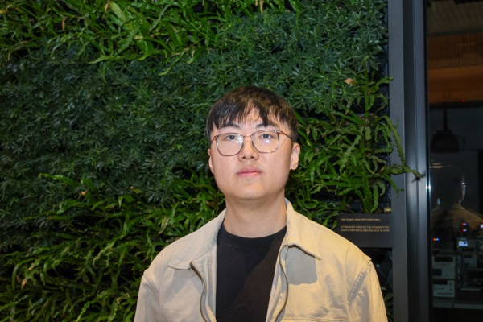
Lachlan MacDonald
Postdoctoral Researcher, ESE
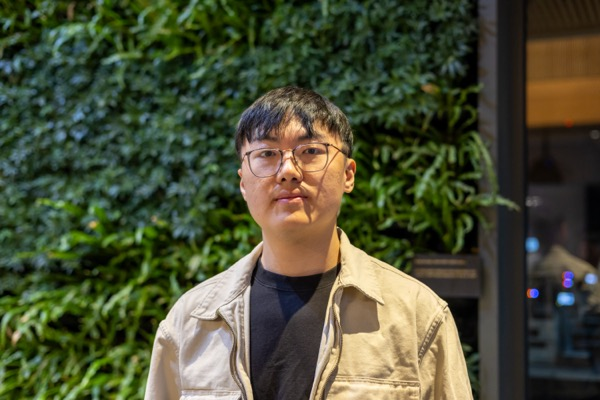
Hongkang Li
Postdoctoral Researcher, ESE

Sonia Castro Rodriguez
Program Coordinator, IDEAS
Current PhD Students
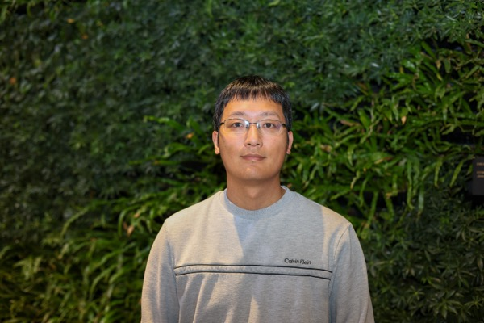
Tianjiao Ding
CIS
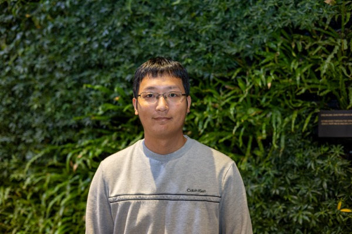
Salma Tarmoun
SAS
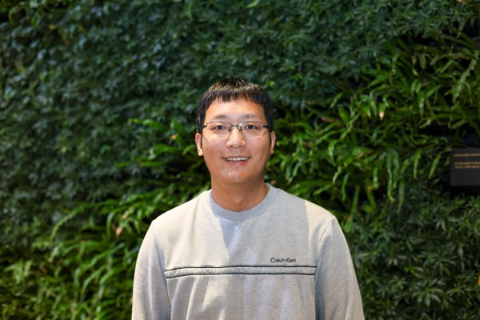
Darshan Thaker
CIS
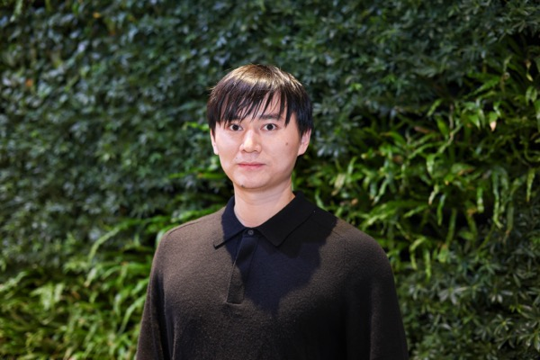
Kaleab Kinfu
CIS
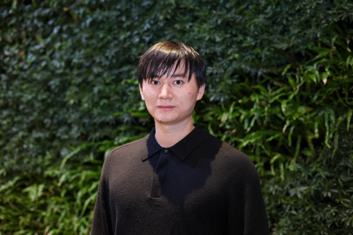
Ryan Chan
ESE
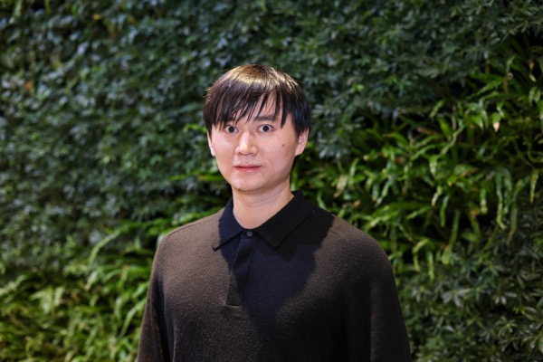
Ziqing Xu
CIS
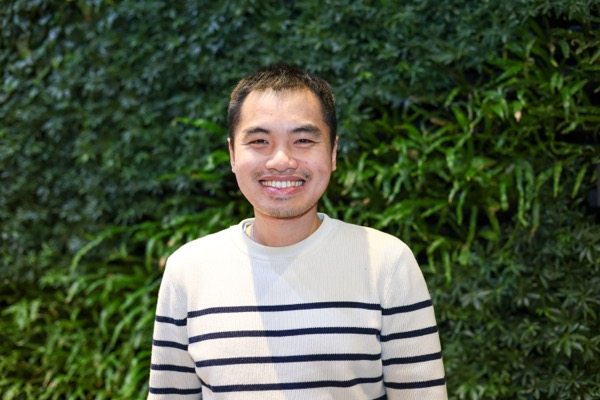
Liangzu Peng
CIS
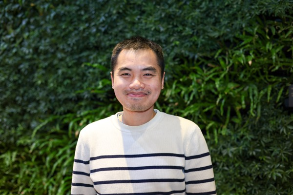
Kyle Poe
SAS
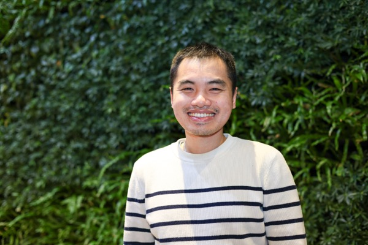
Ryan Pilgrim
CIS
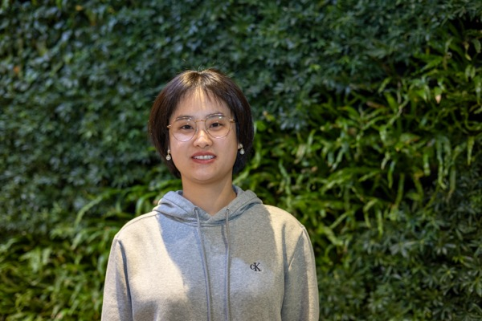
Konstantino Emmanouilidis
CIS

Nghia Nguyen
CIS
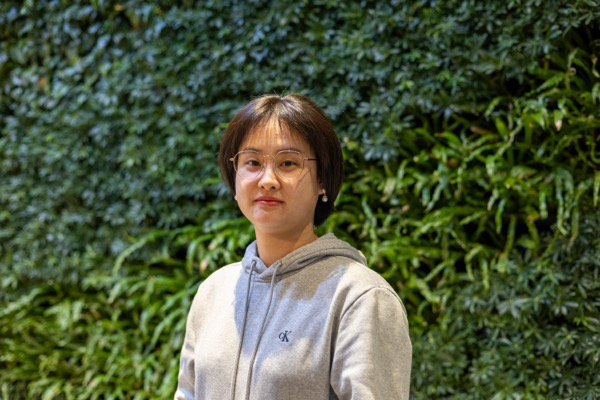
Buyun Liang
CIS
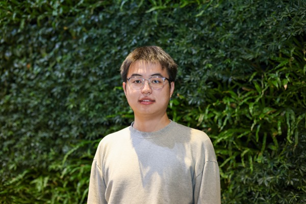
Jinqi Luo
CIS
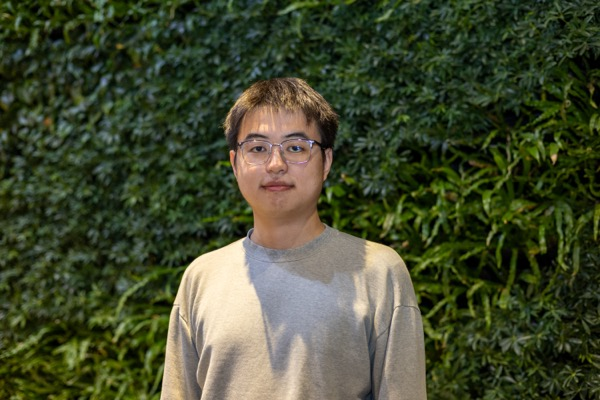
Uday Kiran Reddy Tadipatri
ESE
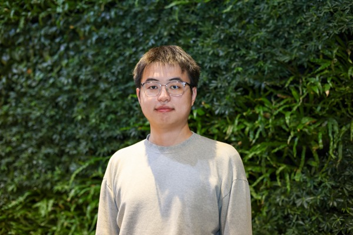
Yuyan Ge
CIS
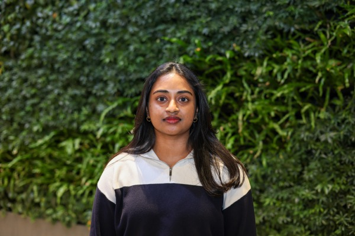
Leandro Palma
CIS
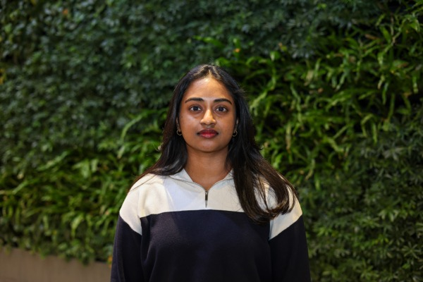
Fengrui Tian
CIS
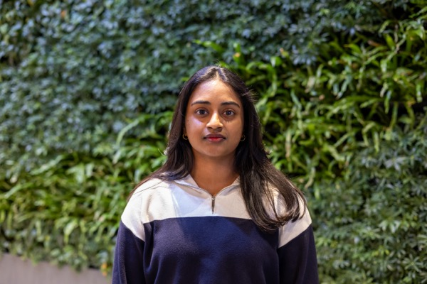
Sanjana Gundapaneni
ESE
Former Post-doctoral Researchers
- Hancheng Min '25
- Guilherme França '20
- Zhihui Zhu '19
- Manolis Tsakiris '17
- Shahin Sefati '16
- Bijan Afsari '15
- Erdem Yoruk '13
- Aastha Jain '13
- Luca Zappella '12
- Diego Rother '11
- Nash Ravichandran '11
- Mihaly Petreczky '06
Former PhD Students
- Aditya Chattopadhyay '24
- Carolina Pacheco '24
- Ambar Pal '24
- Efi Mavroudi '22
- Tianyu Ding '21
- Flori Yellin '20
- S. Mahendran '18
- Chong You '18
- Evan Schwab '17
- Giann Gorospe '17
- Lingling Tao '16
- Manolis Tsakiris '16
- Colin Lea '16
- Ben Haeffele '15
- Roberto Tron '12
- Rizwan Chaudhry '12
- Ehsan Elhamifar '12
- Ertan Cetingul '11
- Nash Ravichandran '10
- Dheeraj Singaraju '10
- Alvina Goh '10
Former Masters Students
- Prashast Bindal '21
- Connor Lane '19
- Ron Boger '17
- Benjamin Bejar '12
- Jixin Li '10
- Gagan Bansal '09
- Atiyeh Ghoreyshi '06
Former Undergraduate Students
- Shreya Wadhwa '20
- Stewart Slocum '19
- Nicolas Jimenez
- Solomon Liu
- Sampreet Niyogi
Former Interns / REU Students
- Derek Lim '20
- Alejandro Barrera '19
- Evan Frenklak '18
- Ksenia Lekomtceva '18
- Max Lu '18
- Imke Mayer '18
- Larissa Clopton '17
- Divya Bhaskara '16
- Alexander Serrano '15
- Quin Liu '13
- Patrick McClure '12
- James Breen '11
- Aline Elad '10
- Leyla Isik '09
Visiting Students
- Salma Tarmoun
- Julio Hurtado
- Turan Orujlu
- Johannes Stetten
- Jacopo Cavazza
- Claire Donnat
- Soren Wolfers
- Bertrand Rondepierre
- Hans Lobel
- Islem Rekik
- Laurent Bako
- Andreas Beckers
- Matthias Behnisch
- Annalisa Epifani
- Behrooz Nasihatkon
- Simon Schuetz
- Lucas Theis
- Roberto Tron
- Martin Wojkowsky
Rotation Students
- Dan Abretske
- Xiaodong Fan
- Yasmin Hashambhoy
- Tara Johnson
- Merve Kaya
- David Kim
- Ting Li
- Congyuan Yang
- Michael Abboud